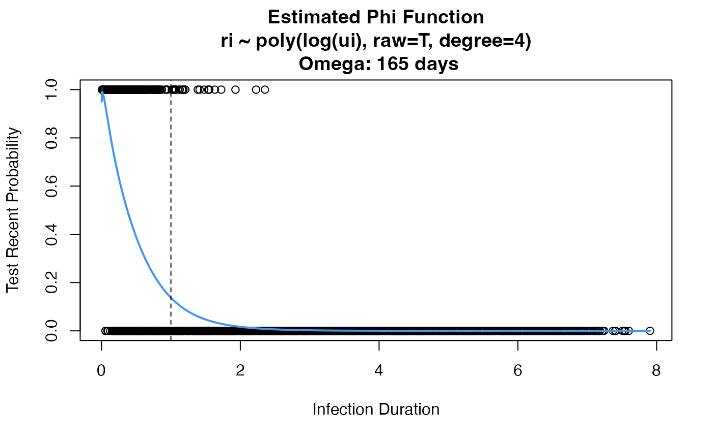

estRitaProperties.RdEstimate a phi function, and output omega
estRitaProperties(
phidat,
maxT,
bigT,
dt = 1/365.25,
min_dt = FALSE,
formula,
family,
use_geese,
return_all = FALSE,
plot_phi = FALSE,
...
)Data frame used to estimate the phi function, needs to have columns ri (recency indicator), ui (duration), and id (if use_geese == TRUE)
Maximum time to estimate phi until
T for estimating MDRI (what defines recent infection)
An integration step size. Should be no more than 1 day.
Make the minimum time dt (necessary if doing a log transformation of ui)
Formula for fitting the model to phidat. Formula argument must take in only ui as the newdata. For example, do not create a ui^2 variable. Use poly(ui, ...) function to fit polynomial terms.
Family argument for glm or gee
Indicator to fit a gee model using geese(), or a glm model with glm()
Whether to return additional objects used in internal functions (will use more memory)
Whether or not to plot the estimated phi function
Additional arguments to glm or geese for fitting model
List of results:
omega: Estimate of Omega
omega_var: Variance of estimate of Omega
bigTidx: Index of bigT based on ts_index
ts_index: Index mapping each time point to an integer
get.integral.est: Function to give an estimate of Omega T for some T as arg to the function
# Define phi function
phi.func <- getTestRecentFunc(window=200, shadow=191)
# Simulate external study data
study <- simExternal(1, phi.func)
colnames(study) <- c("id", "ui", "ri")
# Estimate omega based on 3rd degree polynomial
props <- estRitaProperties(
phidat=study, maxT=5, bigT=1,
formula="ri ~ poly(ui, raw=T, degree=4)", family=binomial(link="logit"),
use_geese=TRUE, plot_phi=TRUE, return_all=TRUE)
#> Warning: glm.fit: fitted probabilities numerically 0 or 1 occurred
# Estimate omega based on 3rd degree polynomial, log function
# NOTE: If you do this, need to not have any ui = 0
study.log <- study
study.log[study.log$ui == 0, "ui"] <- 0.01
props <- estRitaProperties(
phidat=study.log, maxT=10, bigT=1, min_dt=TRUE,
formula="ri ~ poly(log(ui), raw=T, degree=4)", family=binomial(link="logit"),
use_geese=TRUE, plot_phi=TRUE)

# Return additional function that can be used to
# quickly get other omega estimates
props <- estRitaProperties(
phidat=study, maxT=5, bigT=1,
formula="ri ~ poly(ui, raw=T, degree=3)", family=binomial(link="logit"),
use_geese=TRUE, plot_phi=FALSE, return_all=TRUE)
#> Warning: glm.fit: fitted probabilities numerically 0 or 1 occurred
# What is \int_0^T \phi(t) dt for ts=T?
props$get.integral.est(ts=2.1)
#> $omega
#> [1] 0.5092978
#>
#> $omega_var
#> [1] 0.0004007974
#>
#> $idx
#> [1] 767
#>